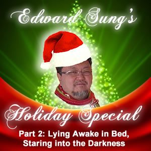
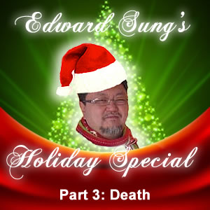

~

Edward Sung’s Holiday Special 2012!
~Edward Sung’s Holiday Special 2012! Part 1: Fear
Edward shares his fears and fears throughout the years.
Listen on Internet Archive. Listen on Google Drive.🎁
Edward Sung’s Holiday Special 2012! Part 2: Lying Awake in Bed, Staring Into the Darkness

Waking up at 3 a.m. Lying in the dark, trying to breathe. Staring at the ceiling. Thinking about life. It’s Christmas time!
Listen on Internet Archive. Listen on Google Drive.🎁
Edward Sung’s Holiday Special 2012! Part 3: Death

Edward meditates on death and dying. Last of a series.
Listen on Internet Archive. Listen on Google Drive.